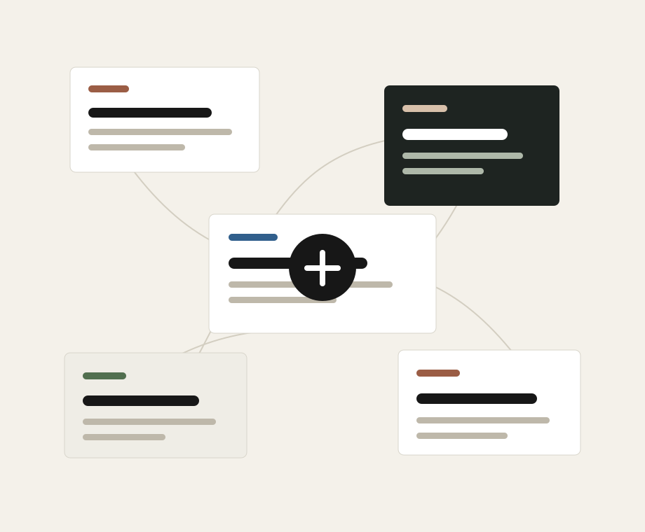

语音 Agent、工程工作流与长期项目记录。
Projects, learning, thinking
念念不忘，必有回响。
Love and it echoes.
这里展示我的工程项目、学习研究和哲学写作：从实时语音 Agent 到工程协作工作流， 从数学、经济与 AI 学习，到关于审美目的论、主体性与现代生活的持续思考。

数学、经济、AI 与 C 语言的结构化学习。
审美目的论、主体性、承认与现代性批判。
Selected projects
工程不是代码堆积，而是把复杂系统变得可运行、可解释、可复盘。
Writing
最新可公开整理的笔记
X-Talk 系统架构分析
从 API、事件总线、Managers、Agent 和 Models 分层理解实时语音 Agent 系统。
Mac 本地开发 - 服务器测试 - GitHub 协作工程指南
定义本地开发、远端验证和多人协作之间的责任边界与闭环。
美作为终极解释
关于主体、承认、世界生成与审美目的论的一篇系统性长文。
审美目的论的实践论
把审美目的论从形而上学问题推进到实践、选择与生活形式。
The Economics of Taxation
税收经济学资源笔记，适合作为财政、激励与制度分析的学习入口。
Algèbre 与 Topologie 学习笔记
线性代数、endomorphismes、赋范空间、连续性与可微性等课程笔记。
Knowledge map
知识库的长期栏目
About
成果、思考与持续输出
这个网站用于展示我在工程、学习和思想写作中的阶段性成果。项目会沉淀为架构分析、 开发日志和可复盘的技术决策；学习会沉淀为结构化笔记；思考会继续发展为更完整的文章。 我希望它保持简洁、清晰，并随着持续实践而不断更新。